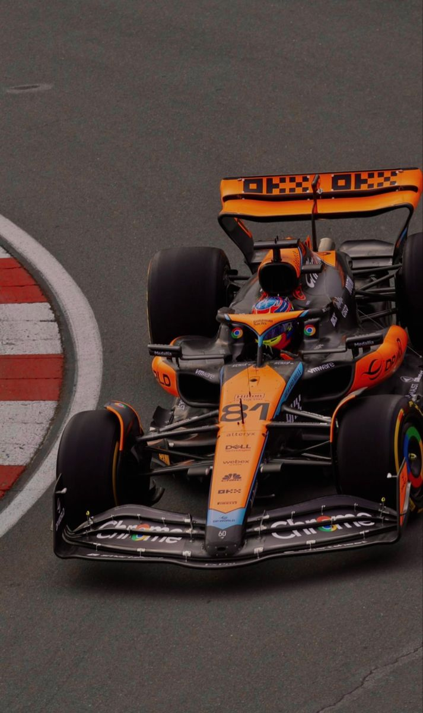

<html lang="en"></html>
<head>
    <meta charset="UTF-8">
    <meta name="viewport" content="width=device-width, initial-scale=1.0">
    <title>TEAMS</title>
</head>
<body>
    
</body>
</html>
<html lang ="en"></html>
<head>
    <link rel="stylesheet" href="teams.css">
</head>
<body>

    <h3><br>TEAMS<br></h3>

<article>
  <section class="Ferrari">
    <br><br>
    <c><br><br>Scuderia Ferrari: <br> A Formula 1 Legend</c>
       <p><br><br>Scuderia Ferrari is one of the most iconic and successful teams in the history of Formula 1 racing.
        Founded in 1929 by Enzo Ferrari, the team has been a dominant force in the sport for decades.
        <br><br><br>Recent Achievements: <br> While Ferrari has faced challenges in recent years, the team has shown signs of resurgence. With a strong driver lineup and a focus on improving performance, Ferrari aims to return to the top of the Formula 1 grid and compete for championships.</p>

 <section class="Mclaren">
    <br><br><br><br><br><br>
    <e><br><br><br>McLaren</e>
        <p><br><br><br>A renowned British Formula 1 racing team with a rich history of success.
            Founded in 1963 by the legendary New Zealand racing driver Bruce McLaren, the team has become one of the most iconic and respected names in the sport.
        <br><br><br>Recent Achievements: <br> McLaren has enjoyed a resurgence in recent years, with a series of impressive performances and podium finishes. The team has consistently challenged for top positions and has shown strong competitiveness in both the Constructors' and Drivers' Championships.
        Notable achievements include multiple podium finishes, pole positions, and race victories, demonstrating McLaren's return to form as a top-tier Formula 1 team. 
        <br><br><br> McLaren is a symbol of excellence and innovation in Formula 1, and its legacy continues to inspire fans and competitors around the world. </p>
            
 <section class="Mercedes">
    <br><br><br><br><br><br>
    <f><br><br><br>Mercedes-AMG Petronas Motorsport</f>
        <p><br><br>A highly successful Formula 1 racing team based in Brackley, England. The team is a part of the Mercedes-Benz High Performance Powertrains division and has been a dominant force in the sport since the introduction of hybrid power units in 2014.
        <br><br><br>Recent Achievements: <br> Mercedes-AMG Petronas Motorsport has continued its dominance in Formula 1 in recent years. While the team has faced increased competition from rivals like Red Bull Racing, they have remained a force to be reckoned with.
        <br><br>Mercedes-AMG Petronas Motorsport is a force to be reckoned with in Formula 1,known for its exceptional performance, technological advancements, and the driving talent of Lewis Hamilton.
        <br><br>Mercedes' ongoing success demonstrates their commitment to innovation, driver development, and strategic planning, solidifying their position as a top-tier Formula 1 team.</p>
 
 <section class="Redbull">
    <br><br><br><br><br><br>
    <g><br><br><br>Red Bull Racing </g>
        <p><br><br>Racing team based in Milton Keynes, England. The team is owned by the energy drink company Red Bull and has been a dominant force in the sport since its entry in 2005.
        <br><br><br>Recent Achievements: <br> Red Bull Racing has continued its dominance in Formula 1 in recent years, securing back-to-back Constructors' and Drivers' Championships in 2022 and 2023. Max Verstappen, driving for Red Bull, has been a key figure in their success, winning consecutive Drivers' Championships. The team's strong performance is a testament to their innovative approach, driver talent, and strategic planning.</p>
    
 <section class="Williams">
    <br><br><br><br><br><br>
    <k><br><br><br>Williams Racing </k>
        <p><br><br><br>A historic Formula 1 team based in Grove, Oxfordshire, England. Founded in 1969 by Sir Frank Williams and Sir Patrick Head, the team has a rich heritage and has achieved numerous successes throughout its history.
        <br><br><br<br>Recent Achievements: <br> Williams Racing has shown signs of improvement in recent seasons, but has not yet returned to its former level of dominance. The team has made strides in terms of car performance and competitiveness, with occasional strong results and points finishes. However, they still face challenges in consistently challenging for podiums <br>
         and victories against the top teams like Red Bull and Mercedes. <br><br><br> While Williams has not achieved major championships or consistent top-three finishes in recent years, their progress and efforts to rebuild the team are notable. They have shown a commitment to developing young talent and improving their car performance, which could lead to further successes in the future.</p>
            
</article>